Machine Learning
This page presents my learning journey and evidence from the Machine Learning module. It brings together collaborative discussions, data-analysis and neural-network activities, the Group D Airbnb project, my individual Fashion-MNIST assessment, feedback and critical reflection.
Live e-Portfolio: https://vinodjadhav-ai.github.io/
Contents
- Module Overview
- Learning Outcomes
- Learning Journey
- Collaborative Discussion 1
- Unit 3: Correlation and Regression
- Unit 5: Jaccard Distance
- Group D: Airbnb NYC
- Unit 7: Perceptrons
- Collaborative Discussion 2
- Unit 8: Gradient Descent
- Unit 9: CNN
- Unit 11: Fashion-MNIST and Model Evaluation
- Professional Development
- Final Reflection
- Learning Outcome Mapping
- References
1. Module Overview
The Machine Learning module introduced methods for understanding data, recognising patterns and making predictions. I explored the connection between data preparation, statistical reasoning, clustering, regression, neural networks and model evaluation, alongside the ethical questions raised when machine learning is used in practice.
My learning involved two different assessed projects: a collaborative analysis of New York City Airbnb listings and an individual Fashion-MNIST clothing-image classification presentation. The first emphasised understanding a real-world dataset and evaluating price-prediction models; the second compared a simpler classification baseline with a convolutional neural network (CNN).
This e-portfolio brings together selected discussions, activities, project outcomes and critical reflection. Supporting files are linked separately where available, while activities still awaiting evidence are clearly identified.
2. Module Learning Outcomes
- Articulate the legal, social, ethical and professional issues faced by machine learning professionals.
- Understand the applicability and challenges associated with different datasets for machine learning algorithms.
- Apply and critically appraise machine learning techniques to real-world problems where technical risk and uncertainty are involved.
- Develop the skills required to contribute effectively as a member of a development team in a virtual professional environment.
Discussion work contributed to my awareness of professional and ethical responsibilities (LO1). Data exploration, Jaccard calculations and the Airbnb project supported my understanding of datasets (LO2). The Airbnb and Fashion-MNIST assessments provided opportunities to interpret modelling results and limitations (LO3), while Group D collaboration supported virtual teamwork (LO4).
3. My Learning Journey
At the beginning of this module I could relate data analysis to my background in telecommunications and network engineering, but several machine learning terms were new to me. I initially tended to think of a model mainly in terms of its final accuracy or prediction. The early discussions and practical exercises encouraged me to pay more attention to the data and assumptions behind the result.
The Airbnb group project made this practical. I worked on exploratory data analysis, looking at characteristics of the listings and how price, room type and location might affect interpretation. I began to see why summary statistics and charts are needed before selecting or evaluating a predictive model.
Later, the Fashion-MNIST work introduced a different type of problem: image classification. Comparing logistic regression with a CNN helped me understand that more complex models can improve performance without eliminating errors. My main development has been moving from asking “does the model work?” to asking “what data was used, how well was it evaluated, and where could it fail?”
4. Units 1–3: Collaborative Discussion 1 — Industry 4.0
My initial discussion drew on Metcalf (2024) to examine how automation, network telemetry and interconnected systems improve telecommunications operations but also create dependencies. I used the 2022 Rogers outage in Canada to discuss the wider effects of a network failure on emergency communications, businesses and customers.
In two peer responses, I considered healthcare resilience through monitoring, ransomware prevention, patching, network segmentation and recovery exercises. The discussion moved my thinking beyond using anomaly detection alone: reliable services also depend on change-risk assessment, rollback, human judgement and clear coordination between teams.
My final summary brought these ideas together. Industry 5.0, as I understand it now, is not only about adding intelligence and efficiency, but designing technology around people, sustainability and resilience. I have retained the original discussion posts and forum screenshots as evidence rather than rewriting them for the portfolio.
Learning outcomes addressed: LO1 and LO4.
Supporting Evidence
My Peer Responses
Two replies exploring healthcare cyber incidents, patching, monitoring and recovery planning.
View peer responsesFeedback Received
Two classmates highlighted change control, staged rollout, rollback, independent management access and resilience testing.
View feedback receivedSummary Post
Final synthesis on Industry 5.0, human judgement and network resilience.
View summary postView short discussion reflection
Discussion Screenshots
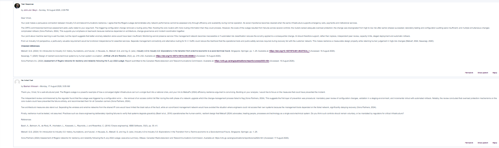
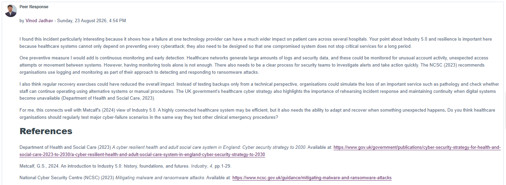
5. Unit 3: Correlation and Regression
In Unit 3, I ran four supplied Jupyter Notebook exercises to understand how data changes influence correlation, fitted regression models and predictions. I compared original and modified outputs for Pearson correlation, simple linear regression, multiple linear regression and polynomial regression.
Increasing noise reduced Pearson correlation from 0.888 to 0.549. Changing one observation altered the simple regression slope and prediction. In the vehicle example, increasing the prediction input for weight from 2300 to 3300 while holding volume constant raised predicted CO2 from 107.21 to 114.76. In the polynomial exercise, changing one data point reduced the fitted-data R² from 0.9432 to 0.8109.
These exercises helped me recognise the importance of interpreting results carefully, distinguishing a change to the training data from a change to prediction input, and avoiding causal claims based only on correlation.
Learning outcomes addressed: LO2; also relevant to LO1 through transparent reporting of model limitations.
Supporting Evidence
Completed Activity
All four exercises with original and modified results, interpretation and links to genuine screenshots.
View completed activityLearning Reflection
My What? So What? Now What? reflection on data sensitivity, model evaluation and responsible interpretation.
View reflectionSelected Activity Screenshots
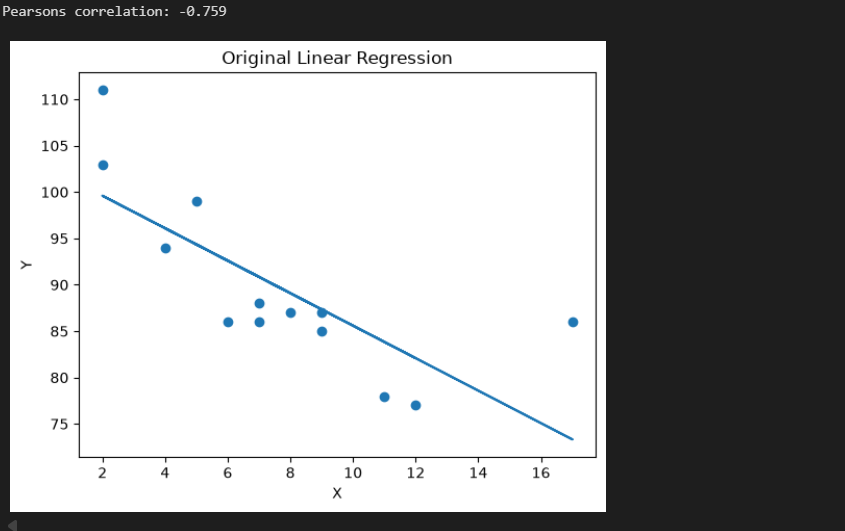
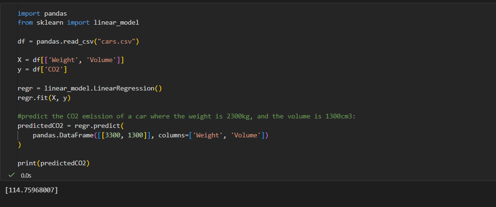
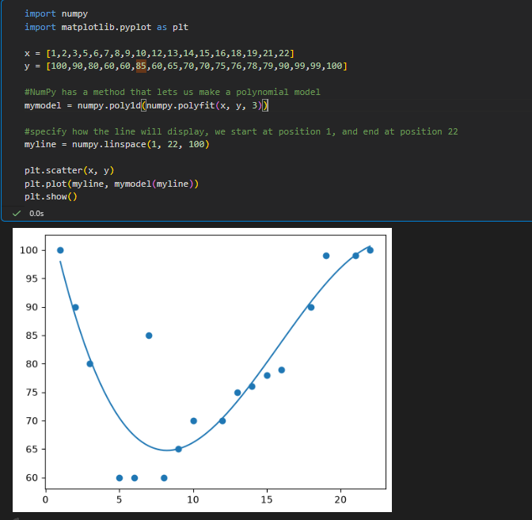
6. Unit 5: Jaccard Distance / Dissimilarity
Unit 5: Jaccard Distance / Dissimilarity
In this activity, I compared medical test results for three individuals using Jaccard Distance. I converted the asymmetric attributes into binary values, where Yes and Positive were represented by 1, and No and Absent by 0. Gender was excluded as instructed in the activity.
I calculated the distance between Jack and Mary, Jack and Jim, and Jim and Mary. This helped me understand how Jaccard Distance measures dissimilarity and why matching zero values are excluded when comparing asymmetric binary data.
Supporting Evidence
Completed Activity
Original dataset, binary conversion, Jaccard formula, calculations, final results and interpretation.
View completed activityActivity Reflection
My reflection on asymmetric binary data, distance calculations and their relevance to clustering.
View reflectionCalculation Results
| Comparison | Jaccard Distance |
|---|---|
| Jack and Mary | 0.33 |
| Jack and Jim | 0.67 |
| Jim and Mary | 0.75 |
Jack and Mary had the lowest Jaccard Distance, making them the most similar pair. Jim and Mary had the highest distance, making them the most dissimilar pair.
Learning Outcomes
This activity helped me understand how different types of data affect the choice of similarity and distance measures in machine learning.
Learning outcome addressed: Understanding the applicability and challenges associated with different datasets for machine learning algorithms.
Learning outcome addressed: LO2.
7. Unit 6: Group D — Airbnb NYC Project
Project Overview
Our Group D project explored market segments and listing prices in New York City using the AB_NYC_2019 dataset of 48,895 listings and 16 variables. Regression helped evaluate whether available features could predict price; clustering helped identify groups of comparable listings. The central question was how to give hosts more useful pricing guidance than a single city-wide average.
My Individual Contribution — Data Understanding and EDA
My assigned work was data understanding and exploratory data analysis (EDA), as reflected in our Trello task board. I inspected missing values, unique listing IDs and unusual prices, then compared price distributions, room types and boroughs. I found that the mean price ($152.72) was considerably above the median ($106), so I used a 95th-percentile view to make the common price range easier to interpret. This was a visualisation choice, not removal of expensive listings from the dataset.
I also recorded why location needed consideration during data preparation: borough median prices were different, while the detailed neighbourhood field contained 221 categories. The two notebooks and my location decision note record these checks and observations.
Team Planning and Responsibilities
The group used Trello to organise tasks across EDA, clustering, price prediction, visualisation and final reporting. The exported board names EDA under my initials. It provides evidence of task allocation and shared coordination, although it is not a formal peer-evaluation record.
Selected Group Findings
| Measure | Reported result |
|---|---|
| Listings / variables | 48,895 / 16 |
| Mean / median price | $152.72 / $106 |
| Median entire-home / private-room / shared-room prices | $160 / $70 / $45 |
| Manhattan / Brooklyn / Bronx median prices | $150 / $90 / $65 |
| HGB test MAE / RMSE / R² | $59.38 / $205.05 / 0.146 |
| Market segments identified | 9 (4 entire-home, 3 private-room, 2 shared-room) |
These are results from our collective report, not claims that I personally trained the regression and clustering models. Although Gradient Boosting compared well against the other tested approaches, the low R² showed substantial unexplained price variation. This limited how confidently a model could recommend an individual listing price.
Critical Reflection
What?
I contributed raw-data checks, visual exploration and the interpretation of room-type and borough pricing patterns.
So What?
EDA taught me that data quality and presentation affect the next stages of a project. Comparing the mean with the median and showing both full and limited price views helped me avoid oversimplifying a skewed market. Teamwork also required explanations that other members could use without recreating all the analysis.
Now What?
For another group analysis, I would agree a shared data dictionary earlier, record cleaning and feature decisions centrally and share draft charts with clear captions before the final report stage.
Learning outcomes addressed: LO2, LO3 and LO4, through dataset evaluation, model-result interpretation and collaboration.
Supporting Evidence
Group D Final Report
Submitted group findings, segmentation, regression results and appendices.
View final reportMy EDA Contribution
Data quality checks, notebooks, six charts and the location decision note.
View EDA evidenceTeamwork Reflection
Rolfe What? So What? Now What? reflection and Trello-based task allocation.
View teamwork reflectionMy EDA Notebooks
Original analysis code for raw data and exploratory visualisations.
Data understanding · EDASelected EDA Screenshots
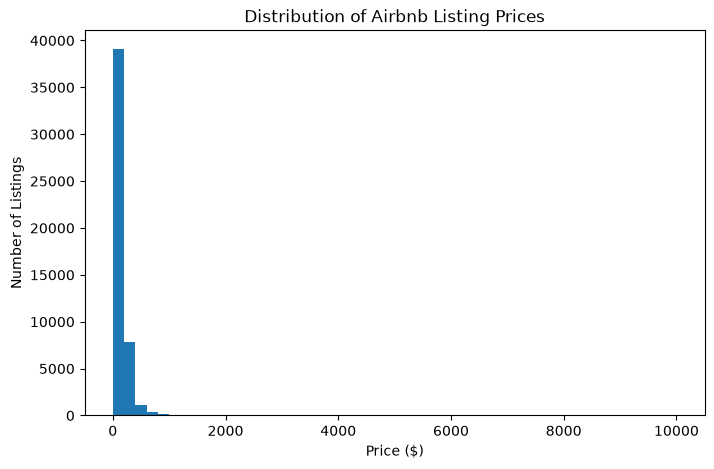
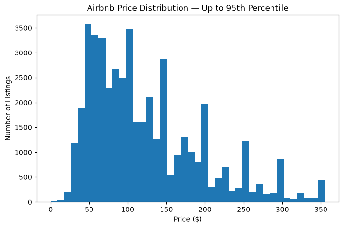
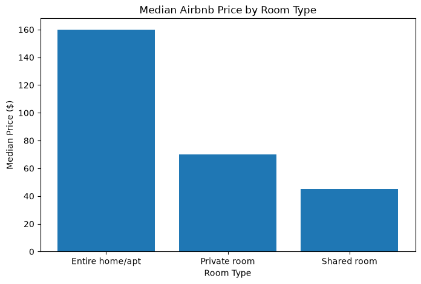
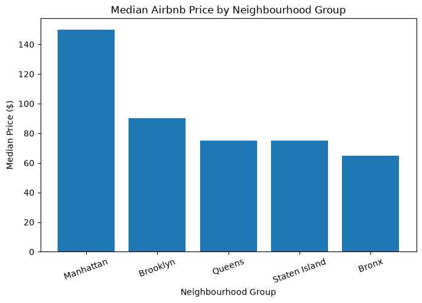
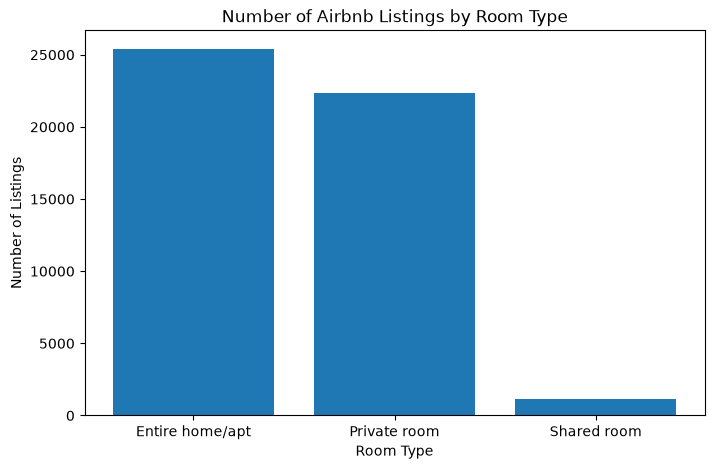
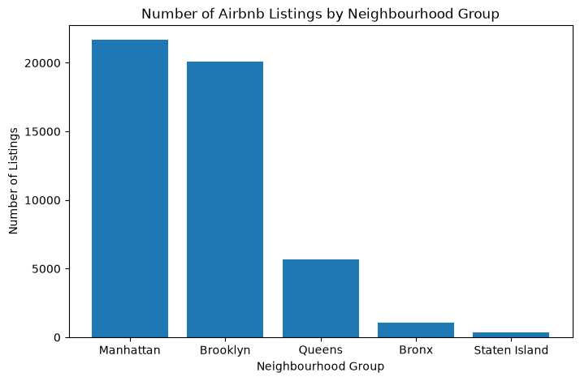
8. Unit 7: Perceptron Activities
I completed three notebook exercises to explore how perceptrons work. In the simple perceptron example, manually changing a weight switched the output from 1 to 0. In the AND exercise, the perceptron learned to classify the four logical input combinations. The multilayer example then demonstrated how hidden neurons and a sigmoid activation function can represent XOR, which cannot be learned by a single standard perceptron.
Changing the AND learning rate from 0.1 to 0.2 resulted in different final weights ([0.5, 0.5] versus [0.6, 0.6]), while all four predictions remained correct. For the multilayer XOR notebook, I recorded the training error decreasing and the final correct outputs (0, 1, 1, 0). I did not carry out a separate epoch or learning-rate comparison for that example.
Learning outcomes addressed: LO2 and LO3, through understanding model behaviour, training choices and limitations.
Supporting Evidence
Completed Activity
Results from all three perceptron notebooks, including input weights, learning-rate comparison and XOR predictions.
View completed activityActivity Reflection
What? So What? Now What? — how these experiments developed my understanding of neural networks.
View reflectionSelected Screenshots
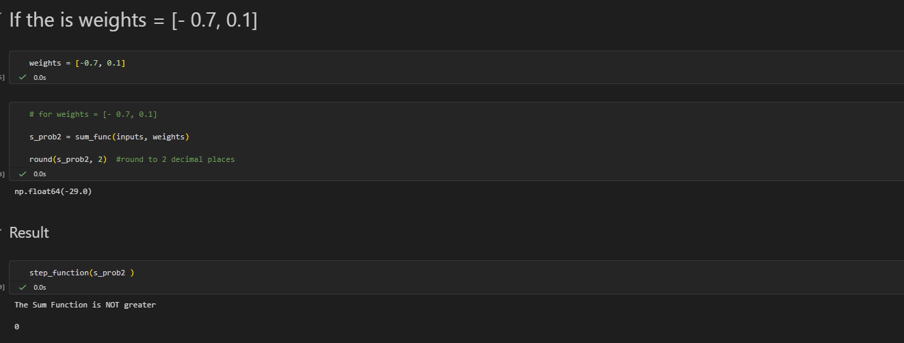
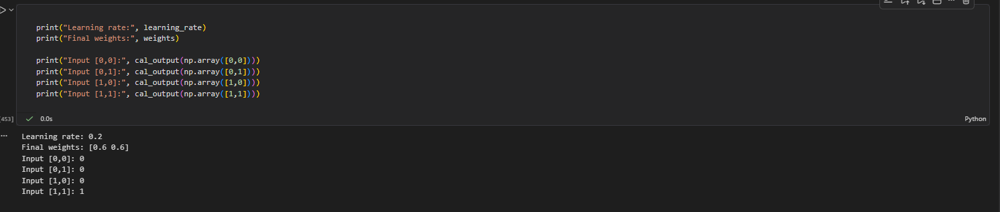
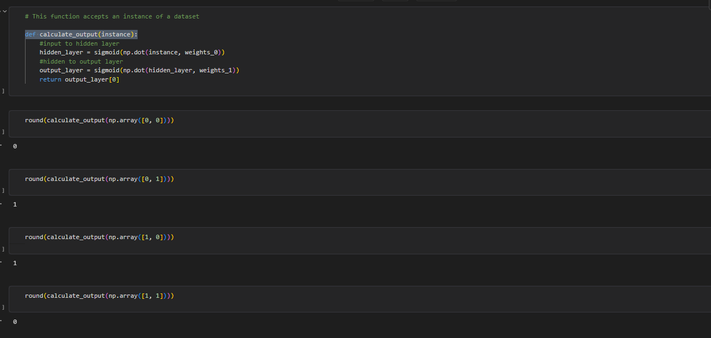
9. Units 8–10: Collaborative Discussion 2 — Legal and Ethical Views on ANN Applications
My initial post considered Hutson (2021) and the benefits of AI-assisted writing for emails, meeting summaries and technical documentation. Drawing on my networking experience, I raised concerns about fluent but inaccurate incident reports, confidentiality and loss of human judgement.
I responded to two classmates about appropriate levels of human review, creativity and the different expectations placed on AI and human decision-making. Their perspectives helped me move from focusing only on errors towards evaluating how serious the errors are, whether benefits justify the risks and what practical safeguards can be put in place.
In feedback on my initial post, a classmate proposed grounding incident reports in approved logs and tickets, distinguishing confirmed from suspected causes, and measuring total drafting and verification effort. This later feedback made the link between ethical concerns and engineering practice more concrete. My summary post, submitted the previous day, already reflected a more balanced view of productivity, risk and human oversight.
Learning outcomes addressed: LO1 and LO4.
Supporting Evidence
Initial Post
Hutson (2021), AI writing benefits, technical-report accuracy, privacy and creative work.
View initial postMy Peer Responses
Two replies on risk-based human review, algorithm aversion, privacy and creative diversity.
View peer responsesFeedback Received
Practical suggestions for source-grounded reporting, confidentiality and measuring actual productivity.
View feedback receivedSummary Post
How discussion changed my view on useful but fallible AI writing tools.
View summary postView short discussion reflection
Discussion Screenshots
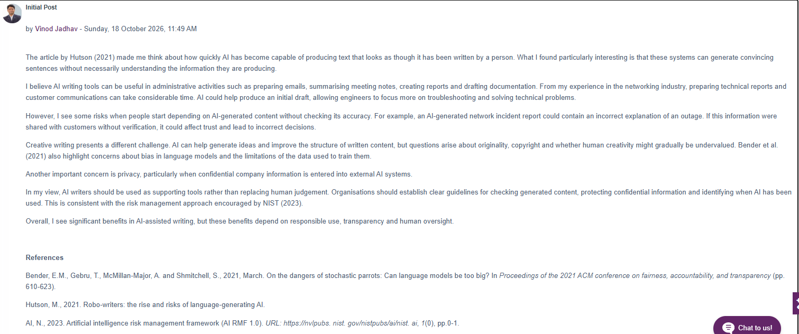
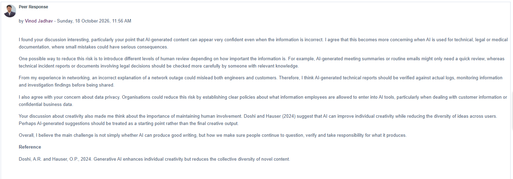
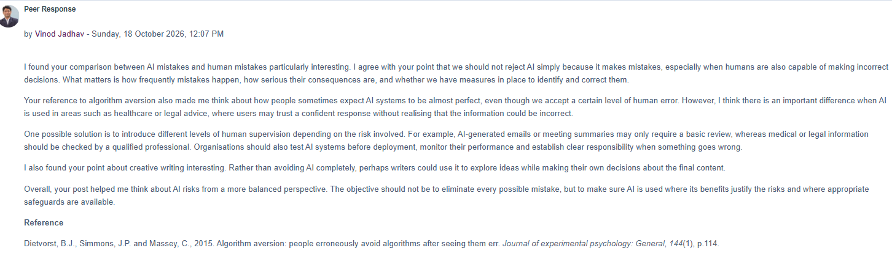
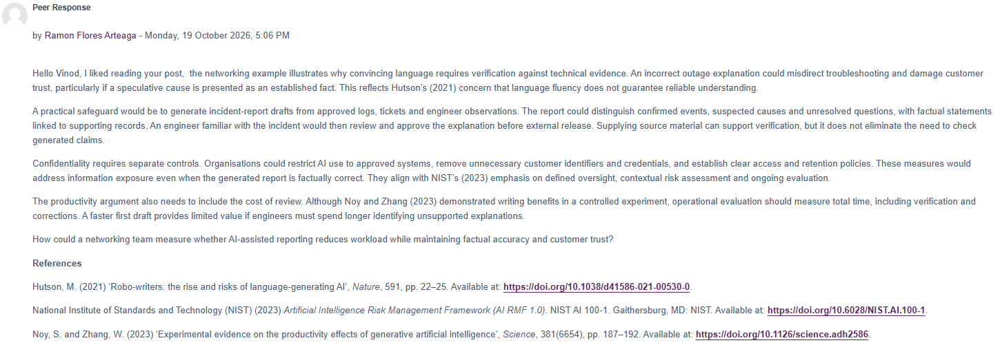
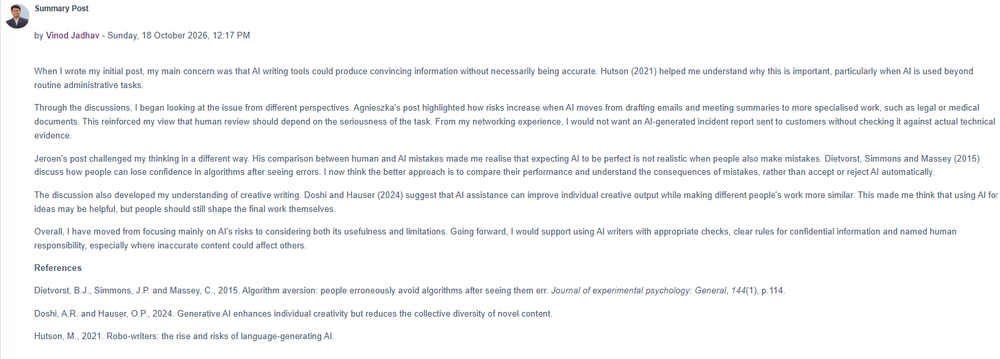
10. Unit 8: Gradient Descent
I used the Unit 8 gradient descent notebook to investigate how the number of iterations and the learning rate affect the cost of fitting a straight line to five data points. I started with the supplied settings (100 iterations, learning rate 0.08) and made two controlled modifications: 20 iterations at the original learning rate, and 100 iterations with learning rate 0.04.
The final printed cost increased from approximately 0.00412 in the original run to 1.52331 with fewer iterations and 0.06338 with the smaller learning rate. This helped me understand that the algorithm needs an appropriate step size and enough updates to reduce error. I also recognised that this simple five-point dataset is useful for demonstrating the method but does not capture challenges such as noisy data or generalisation to unseen observations.
Learning outcome addressed: Understanding the applicability and challenges associated with different datasets for machine learning algorithms.
Supporting Evidence
Completed Activity
Three gradient descent experiments, controlled parameter changes and comparison of final costs.
View completed activityActivity Reflection
What? So What? Now What? — understanding iteration count, learning rate and dataset limitations.
View reflectionSelected Screenshots
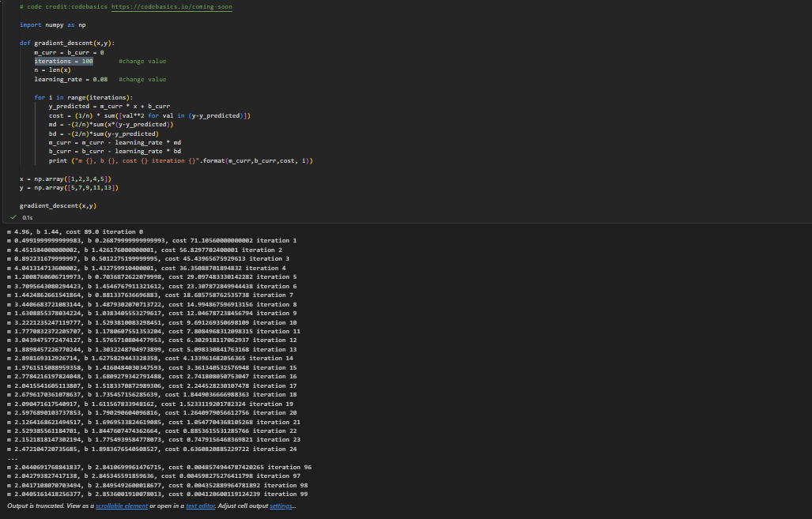
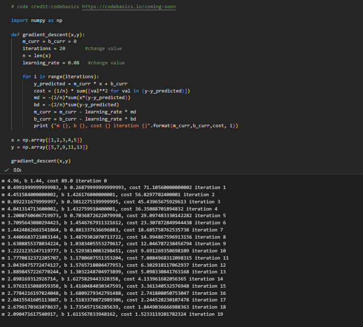
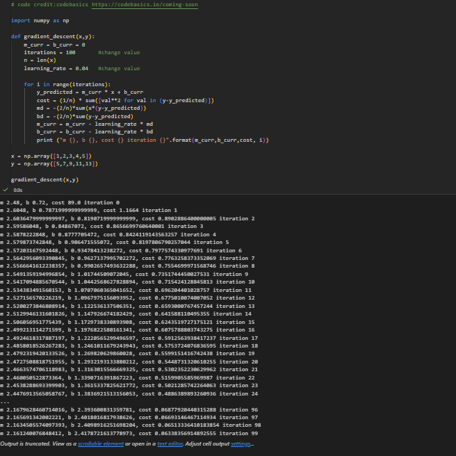
11. Unit 9: Convolutional Neural Networks
For this activity, I ran the supplied convolutional neural network (CNN) notebook using the CIFAR-10 image dataset. I examined the image-preparation, convolution, pooling, training and evaluation sections, then changed the image selected for prediction from x_test[16] to x_test[5] and x_test[12]. I used the same trained model for all three predictions.
The CNN achieved 62.42% test accuracy in the notebook's evaluation. The training-loss plot shows training loss continuing to decrease while validation loss begins to increase after its lowest point, suggesting possible overfitting. The three individual predictions were correct, but this does not mean the model performs perfectly across the test dataset.
Original and Modified Prediction Results
| Test image | Actual label | CNN prediction | Result |
|---|---|---|---|
x_test[16] (original) | 5 — Dog | 5 — Dog | Correct |
x_test[5] (modified) | 6 — Frog | 6 — Frog | Correct |
x_test[12] (modified) | 5 — Dog | 5 — Dog | Correct |
All three chosen images were classified correctly. However, CIFAR-10 images are only 32 × 32 pixels, and details are not always clear. This exercise helped me understand why dataset limitations, overall test metrics and class-specific errors matter beyond a few successful predictions.
In connection with Wall (2019), I also considered the ethical consequences of errors in computer vision. Misclassifying a classroom image is different from incorrectly identifying a person using facial recognition. Dataset bias, privacy, human oversight and accountability are therefore important alongside model accuracy.
Learning outcomes addressed: understanding dataset applicability and limitations; articulating social, ethical, legal and professional concerns arising from machine-learning applications.
Supporting Evidence
Completed Activity
Actual training observations, 62.42% test accuracy and comparison of three image predictions.
View completed activityActivity Reflection
What? So What? Now What? — CNN predictions, limitations and facial-recognition ethics from Wall (2019).
View learning reflectionExecuted Notebook
Python code and experiment outputs for CIFAR-10 CNN training and classification.
Open Jupyter notebookSelected Activity Screenshots
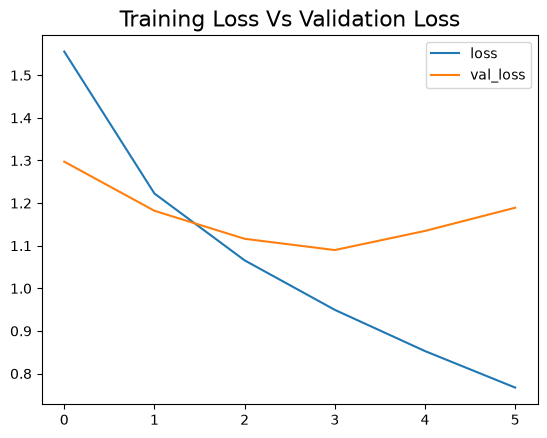
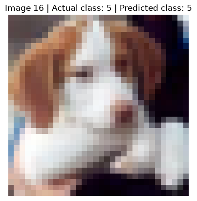
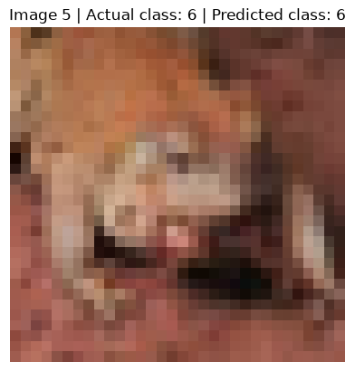
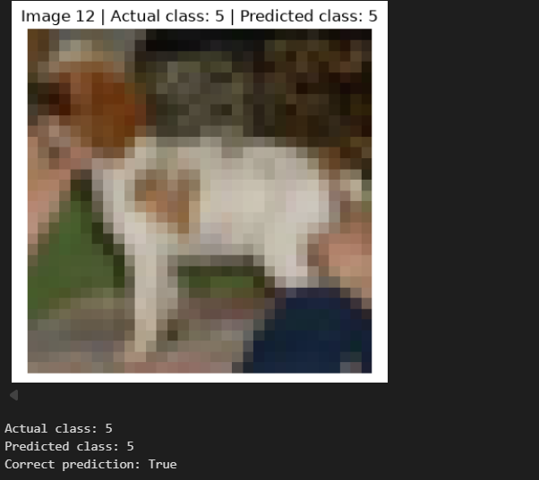
12. Unit 11: Fashion-MNIST Project and Model Evaluation
Project Overview
My individual project examined the Fashion-MNIST clothing-image classification dataset. I compared logistic regression as a relatively straightforward baseline with a convolutional neural network, then interpreted the results and limitations for a presentation.
Results and Evaluation
| Classifier | Reported accuracy |
|---|---|
| Logistic regression | 84.25% |
| Convolutional neural network | 89.77% |
The CNN performed better overall in the reported comparison, but the results also showed that not all clothing classes were equally easy to identify. In the CNN assessment, shirt recall was approximately 75.8%, whereas sneaker recall was approximately 98.6%. This difference illustrates why overall accuracy should be interpreted alongside class-level behaviour.
I also considered model explanation techniques such as Grad-CAM, as well as the limitations of interpretation, overfitting and differences between a benchmark dataset and real-world images. These were important reminders that higher accuracy alone does not settle questions of trustworthiness or deployment readiness.
My Learning
This project helped me move beyond treating CNNs as a complicated term. I learned why they are suitable for images and why a baseline model is useful when deciding whether extra model complexity provides a meaningful benefit.
Learning outcomes addressed: LO1, LO2 and LO3.
Supporting Evidence
Individual Presentation
Presentation describing dataset, approach, metrics and evaluation.
Evidence link to be addedImplementation and Outputs
Verified code, model results and related visualisations.
Evidence link to be addedCritical Reflection
Comparison, limitations and future improvements.
Evidence link to be addedEvidence to add: Link the final presentation and original code/outputs using verified paths; this is a separate project from the Group D Airbnb assessment.
Unit 11 e-Portfolio Activity: Model Performance Measurement
Model Selection and EvaluationAlongside my separate Fashion-MNIST assessment, I worked through the model performance measurement notebook to understand how evaluation metrics respond to changes in inputs and settings. The notebook covers both classification and regression measures.
In the multiclass Iris example, changing test_size from 0.5 to 0.3 raised the micro-average ROC-AUC from 0.7277 to 0.7583, although two individual class scores decreased slightly. For the regression example, changing predicted values increased MAE from 0.50 to 0.65 and reduced R² from 0.9486 to 0.9226. These were small learning experiments, not evidence of general improvement across unseen datasets.
My Learning
I learned that overall performance can hide differences between classes and that regression and classification require different measures. It is important to explain the evaluation setup and its limitations before presenting a model as reliable.
Supporting Evidence
Completed Activity
My ROC-AUC, MAE and R² experiments, including parameter changes, results and interpretation.
View completed activityLearning Reflection
What? So What? Now What? reflection on metric choice, class-level results and responsible reporting.
View reflectionExecuted Notebook
Original exercise notebook with the recorded experiments and calculations.
View Jupyter notebookLearning outcome addressed: LO1 — consideration of responsible and transparent model evaluation and reporting.
13. Team Meetings, Feedback and Professional Development
Team Meetings and Contribution
The Group D project involved coordinating tasks in a virtual team and combining separate analyses into a single report. My responsibilities centred on data understanding and EDA, with attention to communicating what the charts and summary results meant.
Saved teamwork evidence: Our Group D Trello export shows task allocation and project resources. Meeting dates and minutes have not yet been independently verified from the linked notes.
Feedback and Response
I will summarise documented peer and tutor feedback alongside the improvements it prompted. Feedback should be attributed carefully and any confidential peer-evaluation details anonymised.
Professional Skills Matrix and Action Plan
| Skill | Evidence | Development action |
|---|---|---|
| Data understanding | Group D EDA and Unit 5 calculations | Practise distinguishing data types and checking assumptions. |
| Model evaluation | Airbnb regression and Fashion-MNIST comparison | Interpret MAE, R², accuracy and per-class measures together. |
| Team communication | Group D coordination and report review | Keep clear action notes and communicate findings sooner. |
| Ethical awareness | Two collaborative discussions | Check data privacy, bias, explanation and oversight. |
| Technical confidence | Python notebooks and presentation work | Reproduce results independently and retain run evidence. |
14. Final Reflective Piece
Reflective framework: What? So What? Now What? (Rolfe, Freshwater and Jasper, 2001).
What?
I entered the Machine Learning module with practical experience of computer networks and automation but less confidence in statistical and machine learning concepts. Over the module I studied how data is represented, how relationships are explored and how different models are selected and evaluated. The Jaccard activity provided a manageable introduction to distance measures: by changing the medical-test results into binary attributes, I could see why the choice of representation affects a calculation.
The two assessed projects challenged me in different ways. In Group D's Airbnb analysis, my individual focus was EDA. I helped make the dataset more understandable and examined how summary values and charts supported the team's report. In my Fashion-MNIST presentation I moved to image classification and compared logistic regression with a CNN. The collaborative discussions added a wider perspective on the social effects of automation and the responsible use of AI-generated outputs.
So What?
The greatest change in my understanding was recognising that machine learning is not simply a matter of running an algorithm and reporting the final score. Before modelling, data quality, relevance and interpretation matter. The Airbnb data made this particularly clear: the average price was noticeably higher than the median, and the final price-prediction model explained only a limited proportion of variation. This made me cautious about presenting a prediction as though it were an exact valuation.
I also learned that a higher accuracy score can conceal differences across categories. In Fashion-MNIST, the CNN improved overall accuracy over logistic regression, but shirts remained much harder to identify than sneakers. That observation made model evaluation more concrete for me. I began asking which cases the model handles poorly and whether those mistakes would matter in the intended application.
Working in a virtual team reinforced the need to explain technical findings clearly. My EDA contribution was only one part of the final Airbnb report, but it required me to review charts, question interpretations and make sure that descriptions did not overstate what the data showed. I still need more practice reproducing notebook results independently and making technical decisions confidently within a deadline.
The discussions also connected machine learning to professional responsibility. In a networking environment, automation can save time and improve monitoring, but an incorrect output or poorly governed system can have consequences. I now see human review, privacy and transparent limitations as part of technical quality, not separate topics added at the end.
Now What?
My next priority is to strengthen the fundamentals I found most difficult, particularly regression assumptions, optimisation, neural-network training and the interpretation of evaluation metrics. I want to practise with smaller datasets so I can explain each stage in my own words before using more complicated architectures.
I also plan to carry these lessons into network engineering applications. For example, a model that flags unusual network behaviour should be assessed for missed incidents and false alerts, not only its aggregate accuracy. I would begin with reliable data collection, compare a simple baseline, document limitations and retain engineer oversight before recommending operational actions.
Overall, this module increased my confidence in asking better questions about machine learning. I have not mastered every technique, but I am better able to recognise how the dataset, evaluation method, teamwork and ethical context shape whether a model is genuinely useful.
15. Learning Outcome Mapping
| Evidence | LO1 | LO2 | LO3 | LO4 |
|---|---|---|---|---|
| Discussion 1 — Industry 4.0 | ✓ | ✓ | ||
| Unit 3 — Correlation/Regression | ✓ | ✓ | ||
| Unit 5 — Jaccard | ✓ | |||
| Group D — Airbnb | ✓ | ✓ | ✓ | |
| Unit 7 — Perceptrons | ✓ | ✓ | ||
| Discussion 2 — ANN ethics | ✓ | ✓ | ||
| Unit 8 — Gradient Descent | ✓ | ✓ | ||
| Unit 9 — CNN | ✓ | ✓ | ||
| Fashion-MNIST | ✓ | ✓ | ✓ | |
| Unit 11 — Model Performance Measurement | ✓ | ✓ | ||
| Final reflection | ✓ | ✓ | ✓ | ✓ |
Learning outcome mapping links completed practical evidence to relevant module outcomes; final portfolio evidence and reflections should be checked before submission.
16. References
Hutson, M. (2021) ‘Robo-writers: the rise and risks of language-generating AI’, Nature, 591, pp. 22–25. doi: 10.1038/d41586-021-00530-0.
Metcalf, G.S. (2024) ‘An Introduction to Industry 5.0: History, Foundations, ...’ [Full bibliographic details to confirm against the Unit 1 reading list].
Rolfe, G., Freshwater, D. and Jasper, M. (2001) Critical reflection in nursing and the helping professions: A user’s guide. Basingstoke: Palgrave Macmillan.
University of Essex Online (2026) Machine Learning: Unit 5 Jaccard Distance / Dissimilarity Calculations. Module learning activity.
Evidence to add: Complete Harvard references for the discussions, datasets and assessed projects using sources actually consulted.